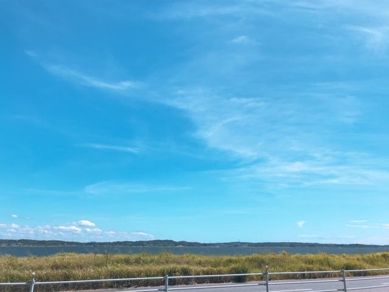

2019/0918Wedねむーい
どうもです
毎日毎日おねむです。
乗り物に乗っているときも、テレビをみているときも、ご飯を食べているときも眠い。。
毎日、気温や体調によって違うパジャマを着てます
こだわり☺︎
あとは頂いたり買ったりしたキャンドルをつけたりアロマをたいたり...
睡眠にはずーっとこだわっていきたいです！

ニコルがおやつ食べてる❤︎
そうだ、この間"天気の子"
2回目を観てきました！
IMAXで観たくてようやく...！
男の子目線のお話も新たな感覚になれるので観るのは好きです

20代のうちにいろんな役を演じたいなぁと
映画やドラマを見るたび思います
経験、したいな
頑張ろ
今日は夜更かししてレコメン！聴いてね❤︎❤︎
2019/09/18 20:36
コメント(306)
未央奈さんブログ更新ありがとうございます。オシャレなパジャマですね。昨日YouTubeでのぎおびの未央奈さん見ました。視力悪いんだね。初めて知りました。未央奈さんは色々物知りだなと思う。東京のオシャレな町とか良く知ってる‼️。眠いのは良いと思う。僕は睡眠薬がないと寝れない。
パジャマ選び、何気に雅～(*^^*)
ブログ更新ありがとう！
私も最近眠たい～
堀ちゃん睡眠にこだわっていてすごいね！
私は全然気にしたことなかった
ファッションやメイク、睡眠にこだわりを持つ堀ちゃんを改めて尊敬した
さすが自慢の推しです！
パジャマ姿もかわいい～
私も最近眠たい～
堀ちゃん睡眠にこだわっていてすごいね！
私は全然気にしたことなかった
ファッションやメイク、睡眠にこだわりを持つ堀ちゃんを改めて尊敬した
さすが自慢の推しです！
パジャマ姿もかわいい～
写真を見て、自分のパジャマとそっくり！ってビックリしました！
俺も眠ーい
どうもでーーす
夏の暑さに耐えて、最近やっと涼しくなってきたから
よく眠れますよね(=_=)
未央奈さんはたぶん豊かな感情と繊細の観察を持ってる方です。この素質は女優さんに向いているかもしれない。
私はもともと日本語の勉強のために色んな日本映画とドラマを観ました。最近日本のバラエティも観始めた。アイドルジャンルのこともだんだん知っています。乃木坂工事中で演技の回あるじゃないですか、日村さんと別れの回、あの自然な演技で女優の魂が潜んでいると思いましたよ。
ちなみにですね、役といえば
キルビルっていう映画で栗山千明さんが演じる美人高校殺し屋とか、そしてデッドプール2で忽那汐里さんが演じる鎖使いミュータントとか、東洋風の長い髪の戦士みたいな役みおなさんにぴったりかもしれない。未央奈さんの声が細くて優しい気質の穏やかで不思議な雰囲気じゃないですか、だからそういう特殊戦闘能力を持ってる謎の人、見た目と違うギャップ、たぶんもっとかっこいい、面白いです。
これはあくまで個人的な感じです。ほかの普通の人の役も似合います。例えば、ビブリア古書堂の事件手帖篠川栞子とかあるいは耳をすませば月島雫（工事中で披露した）みたいな文学女子とか。
演技の仕事楽しみに待ってますね。
私はもともと日本語の勉強のために色んな日本映画とドラマを観ました。最近日本のバラエティも観始めた。アイドルジャンルのこともだんだん知っています。乃木坂工事中で演技の回あるじゃないですか、日村さんと別れの回、あの自然な演技で女優の魂が潜んでいると思いましたよ。
ちなみにですね、役といえば
キルビルっていう映画で栗山千明さんが演じる美人高校殺し屋とか、そしてデッドプール2で忽那汐里さんが演じる鎖使いミュータントとか、東洋風の長い髪の戦士みたいな役みおなさんにぴったりかもしれない。未央奈さんの声が細くて優しい気質の穏やかで不思議な雰囲気じゃないですか、だからそういう特殊戦闘能力を持ってる謎の人、見た目と違うギャップ、たぶんもっとかっこいい、面白いです。
これはあくまで個人的な感じです。ほかの普通の人の役も似合います。例えば、ビブリア古書堂の事件手帖篠川栞子とかあるいは耳をすませば月島雫（工事中で披露した）みたいな文学女子とか。
演技の仕事楽しみに待ってますね。
未央奈 おはよう！
本当に毎日 毎日 眠いよね、、、、
季節に関係なくね。
何でだろね、ん〜
いろいろな役 観たいです！
生徒、先生、マネージャー、CA、、、
楽しみに待ってます！！！
レコメン聞いてて思い出しました。
クシャミして、自分、ギックリ腰になったことを。
物凄く疲れてる時は、注意！
未央奈は未央奈のままで、
最高の笑顔を！
本当に毎日 毎日 眠いよね、、、、
季節に関係なくね。
何でだろね、ん〜
いろいろな役 観たいです！
生徒、先生、マネージャー、CA、、、
楽しみに待ってます！！！
レコメン聞いてて思い出しました。
クシャミして、自分、ギックリ腰になったことを。
物凄く疲れてる時は、注意！
未央奈は未央奈のままで、
最高の笑顔を！
大好きだぁ〜〜
未央奈ちゃんは人一倍大変だし眠くなるのは充分分かるよ！
眠たいときは眠るのが一番！
涼しくなってくると夜は寝やすくなってくるから
ね。
パジャマたくさん持っていてどれを着ようか迷ったりはしない？笑
色んな役、見てみたいな！
犯人、探偵、刑事、CA、ナース
どれも見てみたいな～！
眠たいときは眠るのが一番！
涼しくなってくると夜は寝やすくなってくるから
ね。
パジャマたくさん持っていてどれを着ようか迷ったりはしない？笑
色んな役、見てみたいな！
犯人、探偵、刑事、CA、ナース
どれも見てみたいな～！
未央奈ブログの更新ありがとう♪( ´▽｀)
昼に眠くなるのは夜にコーヒー飲んでる睡眠の問題かも
昼に眠くなるのは夜にコーヒー飲んでる睡眠の問題かも
未央奈の寝間着可愛いーーー
未央奈が出てるドラマ沢山見たい！
でも乃木坂で歌ってる姿も沢山見たい！
どっちも頑張ってーーー
ズー〜と応援してる！
未央奈大好き
未央奈が出てるドラマ沢山見たい！
でも乃木坂で歌ってる姿も沢山見たい！
どっちも頑張ってーーー
ズー〜と応援してる！
未央奈大好き
未央奈さんこんにちは。お久しぶりです約2か月ぶりにコメントします。2か月間持病だった椎間板ヘルニアの手術をしました。昨日退院しました。現在もリハビリをしてます。今回の一件で仕事も退職をし一からスタートしなくてはいけません。なのでしばらくは握手会などのイベントには行けそうにないのでお知らせしておきます。未央奈さんが元気なので良かったです。コメントできそうなときには書きますのでよろしくお願いします。未央奈さんも身体気をつけて頑張って下さい！
未央奈！
♪愛ーにーでーきるーことーは まーだーあーるかーい
天気の子ねぇ…
良いよね
by：翔んで9メートル
♪愛ーにーでーきるーことーは まーだーあーるかーい
天気の子ねぇ…
良いよね
by：翔んで9メートル
未央奈大好きだあ！ブログ更新ありがとうー。
未央奈ちゃんブログありがとう！
毎日眠いよねほんとに(*´-`)
休みの日はずっと寝ててもいいくらい1日寝てられますねw
さすが未央奈ちゃんはこだわりがすごいですね！
未央奈ちゃんのいろんなパジャマ姿見てみたいですね笑
次のシングルの握手会行くから待っててね！
毎日眠いよねほんとに(*´-`)
休みの日はずっと寝ててもいいくらい1日寝てられますねw
さすが未央奈ちゃんはこだわりがすごいですね！
未央奈ちゃんのいろんなパジャマ姿見てみたいですね笑
次のシングルの握手会行くから待っててね！
天気の子めちゃ面白いですよね！
かわいい(´・∀・)犬。
あっタバスコもO型(笑)今日も眠いじょ～(笑)お仕事頑張るじょ～q(^-^q)眠い目こすりながらΣ(ﾟДﾟ；≡；ﾟдﾟ)ダメだこりゃ(>_<)ぷぷっ(≧∇≦)
可愛い！パジャマにこだわりあるんだ！
ブログ更新ありがとう！
たしかにやっと涼しくなって寝やすくなったよね！
秋の夜長っていう言葉があるけど、未央奈はどうやって過ごすのが好きかな？
たしかにやっと涼しくなって寝やすくなったよね！
秋の夜長っていう言葉があるけど、未央奈はどうやって過ごすのが好きかな？
いろんな役を演じたいとは向上心があって素晴らしいです。
話は変わりますが今､近所のお子さんが「あーはあぁーーーーーーーーーーーーーーーーーーーっ！！」と言いながら走り去って行きました。
あの子もどんどん向上していってクリスタルキングになってくれればなぁと思いました。


話は変わりますが今､近所のお子さんが「あーはあぁーーーーーーーーーーーーーーーーーーーっ！！」と言いながら走り去って行きました。
あの子もどんどん向上していってクリスタルキングになってくれればなぁと思いました。
みおな可愛すぎ！
レコメンに備えて僕は今からお昼寝しまーす！
おやすみ！
レコメンに備えて僕は今からお昼寝しまーす！
おやすみ！
お久しぶりです
敬語というものを習いました笑
私は寝ても眠いです
家でも学校でも眠いなぁって思います、でも、頑張ろって思わせてくれる存在ができたので、頑張ってます！
パジャマにこだわりがあるのはいいと思います！
私はないです
みおな本当に可愛い
死にまーす、、笑笑
これからも頑張ってください！
応援してます！
敬語というものを習いました笑
私は寝ても眠いです
家でも学校でも眠いなぁって思います、でも、頑張ろって思わせてくれる存在ができたので、頑張ってます！
パジャマにこだわりがあるのはいいと思います！
私はないです
みおな本当に可愛い
死にまーす、、笑笑
これからも頑張ってください！
応援してます！
レコメン！聴きましたよー！
未央奈ちゃんの弟オーディション、未央奈ちゃんの冷めたリアクションが面白いです♪
どこまで続くんでしょうね？☆
未央奈ちゃんの弟オーディション、未央奈ちゃんの冷めたリアクションが面白いです♪
どこまで続くんでしょうね？☆
更新有難う！
御疲れ様でした！
とても可愛いであり、
何時も頑張って下さい、
常に必ずしても応援しています。
どうか御身体に気を付けて下さい！
ずっと大好き！
御疲れ様でした！
とても可愛いであり、
何時も頑張って下さい、
常に必ずしても応援しています。
どうか御身体に気を付けて下さい！
ずっと大好き！
未央奈さん☆‥！ こんにちは！！ 今日もお元気そうで、何よりです！Mailを本当にありがとうございました♫ m(_ _)m そしてブログの更新！も本当にありがとうございました♫♫♫ 秋の夜長、映画三昧みたいですね。 『明日昨日の君とデートする』！ こういう映画！大好きなんですよ❤️ 教えていただき、本当にありがとうございます 早速購入しますね♫❤️
未央奈さん☆‥！ 秋の食の方は、旺盛ですか？
たくさん食べて、エネルギーつけてネ❤️❤️❤️❤️❤️❤️ じゃあ、未央奈さん☆‥！ 今日も１日元気出してネ❤️❤️❤️❤️❤️❤️❤️❤️❤️ （＾∇＾）
未央奈さん☆‥！ 秋の食の方は、旺盛ですか？
たくさん食べて、エネルギーつけてネ❤️❤️❤️❤️❤️❤️ じゃあ、未央奈さん☆‥！ 今日も１日元気出してネ❤️❤️❤️❤️❤️❤️❤️❤️❤️ （＾∇＾）
未央奈！
毎日眠い→俺もそう笑
何時間寝ても眠い笑
毎日眠い→俺もそう笑
何時間寝ても眠い笑
可愛い
未央奈ちゃんが言うように乃木坂は最高だよ！
涼しくなってくると観たいのか？
何があるかな？恋愛ものやラブストーリーかな？
プリンシパルの君へ、クローバー、宇宙を駆けるよだか。
これしか思いつかないな
涼しくなってくると観たいのか？
何があるかな？恋愛ものやラブストーリーかな？
プリンシパルの君へ、クローバー、宇宙を駆けるよだか。
これしか思いつかないな
レコメン拝聴しました。これが紺のパジャマ
大変大人っぽくもあり、でも可愛い
演技はコントを演じて欲しいものです。
ハリセンをもった未央奈ちゃんを見たいですね
大変大人っぽくもあり、でも可愛い
演技はコントを演じて欲しいものです。
ハリセンをもった未央奈ちゃんを見たいですね
好き。
堀ちゃん、来週ブログ更新ありがとう〜
堀ちゃん、大好きだよー
堀ちゃん、大好きだよー
天気の子 曰く
初夏が合う。
真夏まで元気୧(๑•̀ㅁ•́๑)૭✧
な感じかな？
( ˙꒳˙ )ﾌｧｲﾄ
初夏が合う。
真夏まで元気୧(๑•̀ㅁ•́๑)૭✧
な感じかな？
( ˙꒳˙ )ﾌｧｲﾄ
未央奈お疲れ様！
ブログ更新ありがとう！
パジャマかわいい！
おれも毎日眠いよ笑笑
睡眠大事にしてるんだね！
おれはあまり気にしてないから
これからはもっと気にしてみよーかな笑
未央奈が役してる所沢山みたい！
これからも応援してる！
がんばれー！
ブログ更新ありがとう！
パジャマかわいい！
おれも毎日眠いよ笑笑
睡眠大事にしてるんだね！
おれはあまり気にしてないから
これからはもっと気にしてみよーかな笑
未央奈が役してる所沢山みたい！
これからも応援してる！
がんばれー！
みおな〜ブログ更新ありがとう！
パジャマ姿こんなに可愛い人いないよ〜みおな大好き
パジャマ姿こんなに可愛い人いないよ〜みおな大好き
レコメン聴かなかった（ ; ; ）ほんでごめんね…
楽しみにしてたのに（ ; ; ）
パジャマ可愛すぎる♡
楽しみにしてたのに（ ; ; ）
パジャマ可愛すぎる♡
未央奈可愛いー
おそろいのパジャマきたいなー
空もきれい
風邪ひかないよう頑張ってください！
おそろいのパジャマきたいなー
空もきれい
風邪ひかないよう頑張ってください！
最後の写真は愛知県のスカイエキスポで撮ったものなのかな？名古屋の握手会会場の景色綺麗だったなぁ。やっぱり空港なだけあって海が近くて気持ちよかった！！田舎だけどとてもいい所！！常滑市は陶芸とかまねきねこが有名だよ！！また遊びに来てね！！待ってます。
俺も「天気の子」を映画館で今から２週間前に一人で観に行ったよ。新海誠監督の作品は改めて心の底から素晴らしいなと思ったよ。また「天気の子」を観たいなと思っているよ。
そろそろ、夏の疲れも出始めている頃だから、体調崩さない様に気をつけようね。
そろそろ、夏の疲れも出始めている頃だから、体調崩さない様に気をつけようね。
春眠 暁を 何たら かんたら└(ﾟ∀ﾟ└) (┘ﾟ∀ﾟ)┘(笑)若い故に (。-ω-)zzz
レコメンもSHOWROOMも可愛すぎた！
堀ちゃんブログありがと！
僕も最近ずっと眠いです
休みの日はめっちゃ寝てます
僕も最近ずっと眠いです
休みの日はめっちゃ寝てます
みおな
今日もお疲れ様です
自分もおねむで、最近は0時まで起きてるのが辛くなってきました
みおなのブログにコメントする前に睡魔がやってきてしまう事がたまにあります
そうすると朝か次の日にコメントするけど、その前に新しいブログが来てコメントしそびれるという事態に陥ります（昨日も寝ちゃってごめん）
運転してる時も、眠くなるので危ないから気をつけます（特に夜の高速はマジでヤバイです）
ベストは決まった時間に寝て、決まった時間に起きるだけど、全部そうもいかないから、休める時はお互いしっかり寝ましょう
今日の分もコメントするね
夜明けよりも前に睡魔はすぐに来る
ありがとうございました
今日もお疲れ様です
自分もおねむで、最近は0時まで起きてるのが辛くなってきました
みおなのブログにコメントする前に睡魔がやってきてしまう事がたまにあります
そうすると朝か次の日にコメントするけど、その前に新しいブログが来てコメントしそびれるという事態に陥ります（昨日も寝ちゃってごめん）
運転してる時も、眠くなるので危ないから気をつけます（特に夜の高速はマジでヤバイです）
ベストは決まった時間に寝て、決まった時間に起きるだけど、全部そうもいかないから、休める時はお互いしっかり寝ましょう
今日の分もコメントするね
夜明けよりも前に睡魔はすぐに来る
ありがとうございました
ネイビー！！！
全然服買ってないなー
そろそろさすがにまずい。
かわいい未央奈ちゃん見たから
お仕事の残り時間頑張れそう！！
全然服買ってないなー
そろそろさすがにまずい。
かわいい未央奈ちゃん見たから
お仕事の残り時間頑張れそう！！
2
未央にゃブログ更新有難う
453945
未央にゃブログ更新有難う
453945
みおなちゃん更新ありがとう╰(*´︶`*)╯♡
毎日毎日おねむなんだね〜
気候が良い感じだからねむたくなるよね(*´꒳`*)
写真もありがとう！
同じパジャマ持ってる気がする（╹◡╹）♡
ニコルちゃん可愛い（╹◡╹）♡
レコメン！お疲れ様でした(● ˃̶͈̀ロ˂̶͈́)੭ꠥ⁾⁾
毎日毎日おねむなんだね〜
気候が良い感じだからねむたくなるよね(*´꒳`*)
写真もありがとう！
同じパジャマ持ってる気がする（╹◡╹）♡
ニコルちゃん可愛い（╹◡╹）♡
レコメン！お疲れ様でした(● ˃̶͈̀ロ˂̶͈́)੭ꠥ⁾⁾
季節の変わり目、体調管理にはお気を付けて( ˙꒳˙ )
未央奈、ブログ更新ありがとう＼(^o^)／
自分も今週は眠さマックスだよ…
パジャマのこだわり半端無いね(*´∀｀)
素敵や～！
レコメン！聴きたかったけど聴けなかった…
では…
自分も今週は眠さマックスだよ…
パジャマのこだわり半端無いね(*´∀｀)
素敵や～！
レコメン！聴きたかったけど聴けなかった…
では…


頑張り屋さんだからなかなか難しいけど、何とか休んで体調崩さないようにね。